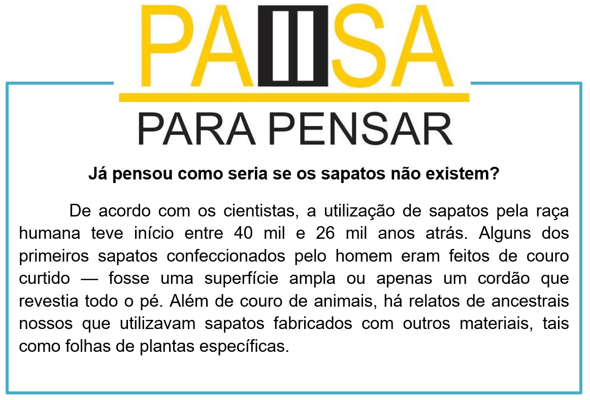

Capítulo 3: Footwear Sector – Setor Calçadista
Então nos deparamos com uma advertisement (propaganda) como essa. Nos vem a cabeça tecnologia e sapatos. Sabemos que ambos andam lado a lado. Então vamos expandir nosso vocabulário no setor de calçados.
A propaganda acima apresenta a possibilidade de escolher six styles (seis estilos) de tênis utilizando um APP (aplicativo) de design de sneakers (tênis). Observe as partes que compõem um tênis.
Você sabia?
A sigla APP vem da expressão: A PARTICULAR PURPOSE, ou seja, “um propósito particular”.
Contextualizando
Curiosidades sobre o setor calçadista
Os shoes são divididos em categorias, são elas:
Children’s shoes – sapatos infantis
Women’s shoes – sapatos femininos
Men’s shoes – sapatos maculinos
Em relação às estações no ano também existe categorias, como:
Winter shoes – sapatos de inverno
Summer shoes – sapatos de verão.
Fato histórico
A moda do salto alto começou com os homens. Durante séculos, os saltos representavam uma alta posição social, e não tinham nenhuma relação com gênero. O sapato também foi crucial para evitar que homens que montavam em cavalos escorregassem do estribo.

Na dica da nossa biblioteca temos o livro: Montagem e acabamento de calçados, SENAI-SP
Este livro aborda a segurança e higiene no trabalho, os riscos de acidente no setor de montagem de calçados, as ferramentas mais usadas, os tipos e características das formas, como preparar os materiais para montagem e o processo de moldagem de cabedais. Nele, o estudante aprenderá como utilizar os meios mecânicos para executar o processo de montagem do cabedal, os sistemas de montagem, a etapa de conformação do calçado, setor de acabamento e os materiais utilizados.
Reconstruindo conhecimentos – Pronomes demonstrativos
Pronomes: this, these, that, those
Vamos estudar os pronomes demonstrativos. Eles são usados para descrever ou identificar objetos que estão perto ou longe da pessoa que está falando. Em inglês é muito simples, pois basicamente só existem duas formas para o singular e duas formas para o plural.
TALKING ABOUT THINGS – FALANDO SOBRE AS COISAS
What is (What’s) this? – O que é isso?
Near you. – Perto de você
This is a chair. – Isso é uma cadeira.
It’s a chair. – É uma cadeira.
WHAT IS THAT? / WHATS’S THAT? – O QUE É AQUILO? – FAR FROM YOU. – LONGE DE VOCÊ.
That is a table. – Aquilo é uma mesa.
That’s a table. – Aquilo é uma mesa.
WHAT ARE THESE? O QUE SÃO ESTES? NEAR YOU – PERTO DE VOCÊ
These are my shoes. – Estes são meus sapatos.
This is a cellphone. – Isso é um telefone celular.
These are cellphones. – Estes são celulares.
FAR FROM YOU – LONGE DE VOCÊ
What are those? – O que são aqueles/aquelas?
Thoes are my shoes. – Aqueles são meus sapatos.
RESUMINDO...
This – Para uma coisa e para perto de você.
That – Para uma coisa e para longe de você.
These – Para mais de uma coisa e para perto.
Those – Para mais de uma coisa e para longe.
Aplicando ao nosso conteúdo
What color are these shoes? – Que cores são estes sapatos?
O que aprendi
• Nesta unidade aprendemos o vocabulário do setor calçadista;
• Na parte gramatical trabalhamos com os pronomes demonstrativos no singular e plural;
• Aprendemos a história dos sapatos;
• Classificamos os sapatos quanto ao sexo e a estação.
Resumo visual dos pronomes demonstrativos
Praticando
Analise o infográfico dos sapatos, e classifique-os em inglês nas seguintes categorias:
Women’s shoes:
_________________
_________________
_________________
_________________
Men’s shoes:
_________________
_________________
_________________
_________________
Winter shoes:
_________________
_________________
_________________
_________________
Summer shoes:
_________________
_________________
_________________
_________________
Observe as imagens e faça sentenças utilizando os pronomes pessoais. Observe se o shoes estão perto ou longe, para usar o pronome demonstrativo correto.